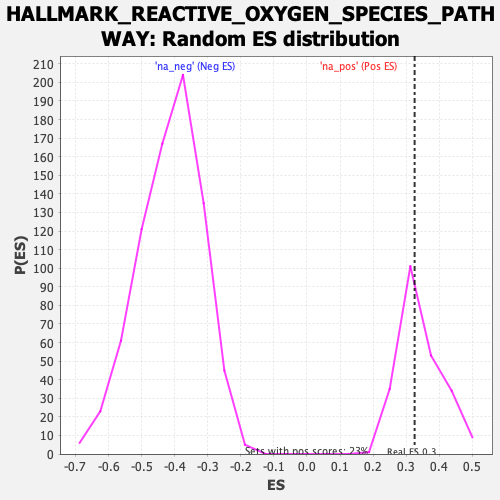

| | | Dataset | DE_genes2 |
| Phenotype | NoPhenotypeAvailable |
| Upregulated in class | na_pos |
| GeneSet | HALLMARK_REACTIVE_OXYGEN_SPECIES_PATHWAY |
| Enrichment Score (ES) | 0.32537332 |
| Normalized Enrichment Score (NES) | 0.94700354 |
| Nominal p-value | 0.55364805 |
| FDR q-value | 0.7391521 |
| FWER p-Value | 0.989 |
Table: GSEA Results Summary
 Fig 1: Enrichment plot: HALLMARK_REACTIVE_OXYGEN_SPECIES_PATHWAY
Fig 1: Enrichment plot: HALLMARK_REACTIVE_OXYGEN_SPECIES_PATHWAY
Profile of the Running ES Score & Positions of GeneSet Members on the Rank Ordered List
| SYMBOL | RANK IN GENE LIST | RANK METRIC SCORE | RUNNING ES | CORE ENRICHMENT | | 1 | GPX3 | 706 | 2.759 | 0.0568 | Yes |
| 2 | ATOX1 | 1211 | 1.781 | 0.0908 | Yes |
| 3 | GLRX | 1344 | 1.599 | 0.1392 | Yes |
| 4 | TXNRD2 | 1797 | 1.209 | 0.1561 | Yes |
| 5 | MSRA | 2055 | 1.053 | 0.1785 | Yes |
| 6 | TXNRD1 | 2569 | 0.832 | 0.1790 | Yes |
| 7 | PFKP | 2627 | 0.808 | 0.2039 | Yes |
| 8 | PDLIM1 | 2638 | 0.804 | 0.2314 | Yes |
| 9 | GCLC | 2702 | 0.786 | 0.2553 | Yes |
| 10 | ABCC1 | 2755 | 0.767 | 0.2791 | Yes |
| 11 | HMOX2 | 2849 | 0.741 | 0.2997 | Yes |
| 12 | OXSR1 | 2853 | 0.741 | 0.3254 | Yes |
| 13 | GSR | 3334 | 0.619 | 0.3202 | No |
| 14 | G6PD | 4382 | 0.438 | 0.2772 | No |
| 15 | LAMTOR5 | 5062 | 0.350 | 0.2516 | No |
| 16 | MGST1 | 5246 | 0.328 | 0.2528 | No |
| 17 | ERCC2 | 5275 | 0.323 | 0.2626 | No |
| 18 | PRDX1 | 5498 | 0.301 | 0.2607 | No |
| 19 | SELENOS | 5552 | 0.294 | 0.2680 | No |
| 20 | NDUFA6 | 5632 | 0.287 | 0.2736 | No |
| 21 | MBP | 5749 | 0.274 | 0.2766 | No |
| 22 | SOD1 | 6392 | 0.212 | 0.2483 | No |
| 23 | PRDX2 | 6436 | 0.208 | 0.2531 | No |
| 24 | GLRX2 | 6577 | 0.194 | 0.2521 | No |
| 25 | SRXN1 | 6750 | 0.180 | 0.2488 | No |
| 26 | GPX4 | 7019 | 0.154 | 0.2393 | No |
| 27 | CDKN2D | 7040 | 0.152 | 0.2434 | No |
| 28 | SCAF4 | 7624 | 0.098 | 0.2144 | No |
| 29 | PRDX4 | 7896 | 0.070 | 0.2017 | No |
| 30 | PRNP | 8729 | -0.008 | 0.1557 | No |
| 31 | EGLN2 | 8844 | -0.019 | 0.1500 | No |
| 32 | STK25 | 8889 | -0.023 | 0.1484 | No |
| 33 | FTL | 9373 | -0.067 | 0.1238 | No |
| 34 | NDUFS2 | 9824 | -0.111 | 0.1026 | No |
| 35 | NQO1 | 10410 | -0.171 | 0.0761 | No |
| 36 | TXN | 10500 | -0.181 | 0.0774 | No |
| 37 | PRDX6 | 10631 | -0.192 | 0.0769 | No |
| 38 | NDUFB4 | 11882 | -0.344 | 0.0193 | No |
| 39 | SBNO2 | 12294 | -0.403 | 0.0105 | No |
| 40 | GCLM | 12443 | -0.426 | 0.0171 | No |
| 41 | CAT | 12654 | -0.456 | 0.0213 | No |
| 42 | FES | 12867 | -0.489 | 0.0265 | No |
| 43 | JUNB | 12993 | -0.514 | 0.0375 | No |
| 44 | PTPA | 13034 | -0.521 | 0.0534 | No |
| 45 | SOD2 | 13441 | -0.599 | 0.0517 | No |
| 46 | HHEX | 14765 | -0.957 | 0.0114 | No |
| 47 | LSP1 | 17250 | -4.861 | 0.0425 | No |
Table: GSEA details [plain text format]

Fig 2: HALLMARK_REACTIVE_OXYGEN_SPECIES_PATHWAY: Random ES distribution
Gene set null distribution of ES for HALLMARK_REACTIVE_OXYGEN_SPECIES_PATHWAY